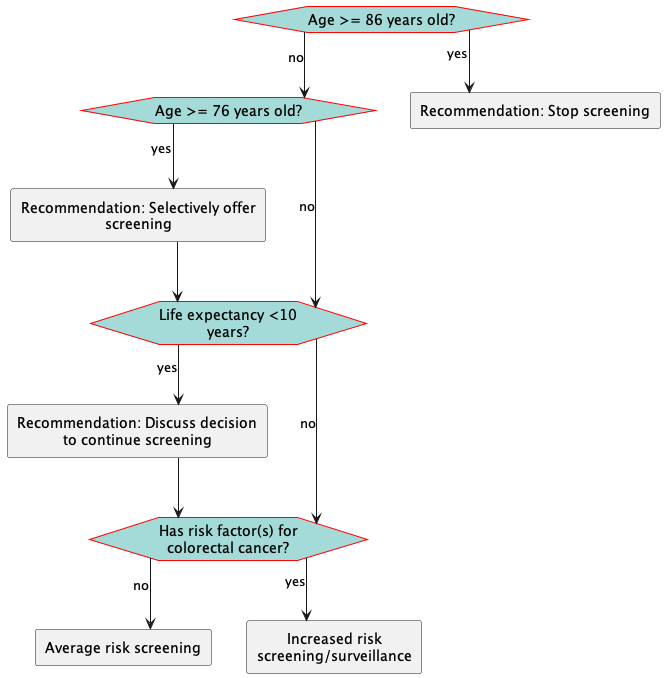

Colorectal Cancer Screening and Management (CRCSM) Clinical Decision Support (CDS) Implementation Guide
0.1.0 - ci-build
Colorectal Cancer Screening and Management (CRCSM) Clinical Decision Support (CDS) Implementation Guide - Local Development build (v0.1.0) built by the FHIR (HL7® FHIR® Standard) Build Tools. See the Directory of published versions
| Official URL: http://cancerscreeningcds.github.io/crcsm-cds/PlanDefinition/flow-DecisionToScreen | Version: 0.1.0 | |||
| Draft as of 2024-10-22 | Computable Name: flow-DecisionToScreen | |||
Copyright/Legal: (C) 2024 The MITRE Corporation. All Rights Reserved. Approved for Public Release: 24-2711. Distribution Unlimited. Unless otherwise noted, this work is available under an Apache 2.0 license. It was produced by the MITRE Corporation for the Division of Cancer Prevention and Control, Centers for Disease Control and Prevention in accordance with the Statement of Work, contract number 75FCMC18D0047, task order number 75D30123F17931. |
||||
Decision to screen logic path.
Evaluate criteria to determine age to start and age to stop, screening modality, and screening interval.

| Id: | flow-DecisionToScreen | |||
|---|---|---|---|---|
| Url: | Decision to Screen | |||
| Version: | 0.1.0 | |||
| Title: | Decision to Screen | |||
| Status: | draft | |||
| Experimental: | true | |||
| Type: |
system: http://terminology.hl7.org/CodeSystem/plan-definition-type code: eca-rule |
|||
| Date: | 2024-10-22 | |||
| Publisher: | MITRE | |||
| Description: | Decision to screen logic path. |
|||
| Knowledge Capability: | executable | |||
| Knowledge Representation Level: | structured | |||
| Copyright: | (C) 2024 The MITRE Corporation. All Rights Reserved. Approved for Public Release: 24-2711. Distribution Unlimited. Unless otherwise noted, this work is available under an Apache 2.0 license. It was produced by the MITRE Corporation for the Division of Cancer Prevention and Control, Centers for Disease Control and Prevention in accordance with the Statement of Work, contract number 75FCMC18D0047, task order number 75D30123F17931. |
|||
| Approval Date: | 2024-10-22 | |||
| Libraries: |
|
|||
| Actions: |
|